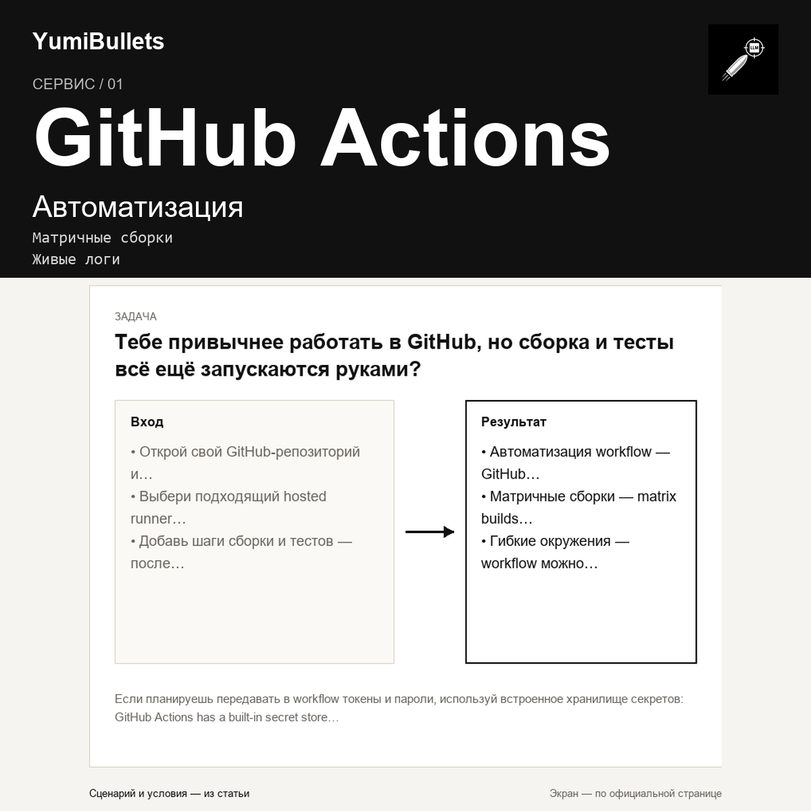

GitHub Actions: CI/CD прямо в репозитории
Тебе привычнее работать в GitHub, но сборка и тесты всё ещё запускаются руками? GitHub Actions превращает репозиторий в место, где код строится, проверяется и выкатывается…

Тебе привычнее работать в GitHub, но сборка и тесты всё ещё запускаются руками? GitHub Actions превращает репозиторий в место, где код строится, проверяется и выкатывается…